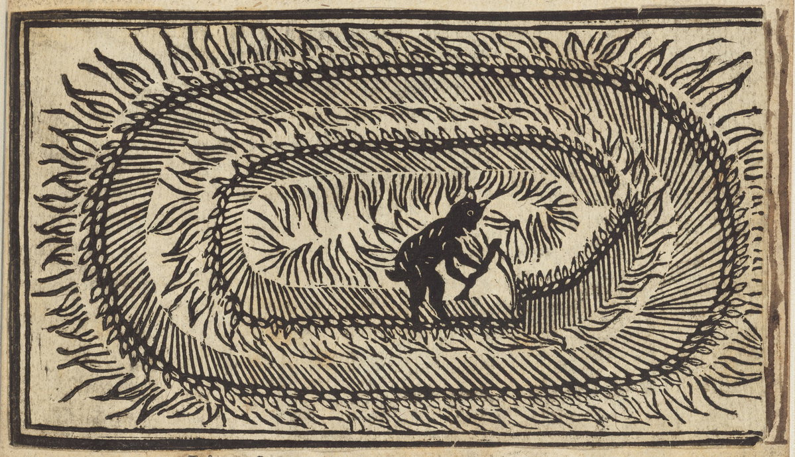

Detail of woodcut from The Mowing-Devil: Or, Strange News out of Hartford-shire (1678). Source: Folger Shakespeare Library. CC BY-SA 4.0. This image is a cropped detail of the original.
Assistant Professor of the Interdisciplinary Study of Religions and Jewish Studies

Detail of woodcut from The Mowing-Devil: Or, Strange News out of Hartford-shire (1678). Source: Folger Shakespeare Library. CC BY-SA 4.0. This image is a cropped detail of the original.